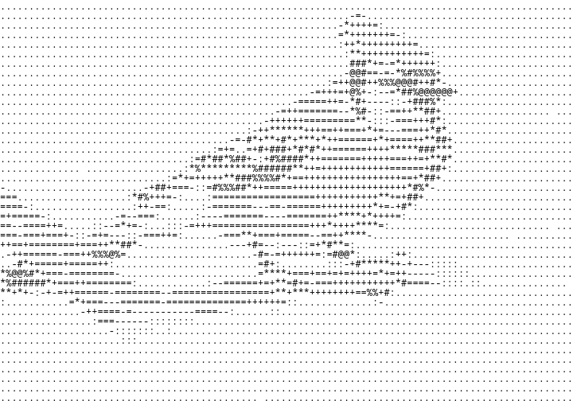
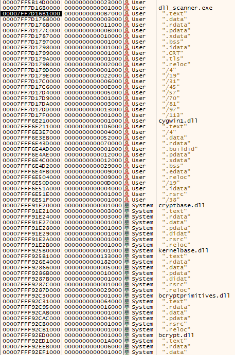
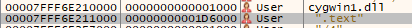
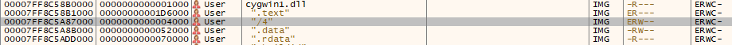
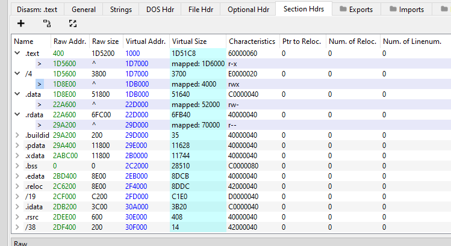
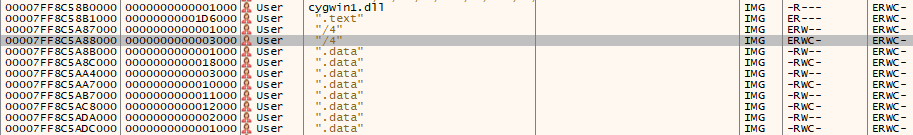

.Companion scanner for mockingjay injection

The mockingjay process injection technique, despite conceptually simple is nothing to be mocked at. The authors, acknowledging the fact that EDR systems focus more on certain win32 API calls, decided to seek an alternative which was either less dependent on these API calls or reduced their usage in some way. During their analysis of the most used injection techniques, two common operations were identified as being easily flagged as malicious: memory space allocation and changing memory protections to Read-Write-Execute (RWX), performed by NtWriteVirtualMemory and NtProtectVirtualMemory. Yup these are some of the usual surveillance targets for our friendly neighbourhood crowdstrikes, err I mean EDRs.
So the solution found by Thiago et al. was to identify vulnerable DLLs with default RWX memory sections and exploit the trust these libraries hold with Windows to inject and execute shellcode undetected by modern anti-virus.
The original article describing the mockingjay technique is seriously interesting, I highly recommend the reader to give it a look https://www.securityjoes.com/post/process-mockingjay-echoing-rwx-in-userland-to-achieve-code-execution.
Whats this article about then? well when reading the original article myself, I noticed the authors didn't provide the source code or described their approach when looking for vulnerable DLLs. I know there's code for this out there, but i thought about writing a tool without looking too much into what other people had already done, just to learn more about the subject.
Handlewalk algorithm
When searching for a usable dll, the process starts by recursively crawl a target base directory, further diving into other dirs and ignoring all files without the .dll extension.
After finding a library file, first thing to attempt was to load it into the program, despite not being the fastest/most stable approach, it allowed me to exclude right away libraries that couldn't be used for self-injection with the mockingjay technique. The rationale here was that if you can't load it into your process, you won't be able to exploit the memory protections anyway, at least for self-injection which is my focus here.
When the algorithm manages to load a DLL, then the fun begins. The returned HMODULE handle after calling LoadLibraryA on the DLL, will be the starting point of our search for a vulnerable memory section. During research I found an interesting pattern, looking at the DLL handle we can see it pointing to the base virtual address of the library after being loaded into the processe's memory. If we look at the memory map of any loaded dll, we can confirm the next section/region is always .text, and it's always at an offset of +0x1000 from the HMODULE address.

So far the logic is clear, the script loads a dll, adds 0x1000 to the library handle value to get the address of the .text section and requests information about this section, then checks the memory protections and adds the size of the section to the handle, this way we get the address of the next section and repeat the process until we find a RWX section.

With the inner workings figured out, I needed to find an API function which could be used to get the size and protections of a given memory section. The obvious location to find the right tool was in memoryapi.h, looking at the documentation for VirtualQuery:
SIZE_T VirtualQuery(
[in, optional] LPCVOID lpAddress,
[out] PMEMORY_BASIC_INFORMATION lpBuffer,
[in] SIZE_T dwLength
);
It takes three arguments, lpAddress is a pointer to the base address of the region we want to query, lpBuffer is a pointer to a MEMORY_BASIC_INFORMATION structure which will hold the results, and dWLength is the size, in bytes, of the MEMORY_BASIC_INFORMATION buffer.
Taking a better look at this struct shows:
typedef struct _MEMORY_BASIC_INFORMATION {
PVOID BaseAddress;
PVOID AllocationBase;
DWORD AllocationProtect;
WORD PartitionId;
SIZE_T RegionSize;
DWORD State;
DWORD Protect;
DWORD Type;
} MEMORY_BASIC_INFORMATION, *PMEMORY_BASIC_INFORMATION;
We can see it has the RegionSize and Protect, which will give us the size of the region in bytes and the memory protections applied to said region. Something worthy of note, which I didn't initially realised, was that the MEMORY_BASIC_INFORMATION structure returned by the VirtualQuery call, refers to a memory region, not a memory section. During development this led to one of those situations where some debugging sessions could have been avoided by more carefully reading the documentation haha. If we look at the header sections of the cygwin1.dll in PE-Bear, we can identify a certain layout:

We got the .text section, and then the /4 section with a mapped virtual size of 4000 bytes. This can also be confirmed using x64dbg:

But these are memory sections, what about regions? Changing the layout to display memory by regions, we can tell its slightly different:

VirtualQuery would always return two different regions of 3000 and 1000 bytes after .text, instead of a single region of 4000 bytes. So my dumb self would initially get cross-eyed looking at this until I realised what the API call was returning. According to ms: "A memory region is a single allocation that is created using a memory allocation function, such as VirtualAlloc or MapViewOfFile."
There is also a remark on https://learn.microsoft.com/en-us/windows/win32/api/memoryapi/ns-memoryapi-win32_memory_region_information, regarding the MEMORY_BASIC_INFORMATION structure and how it describes a "contiguous run of pages within a single allocation that all have the same type, state and protection."
While a section is mainly defined as: "A section object represents a section of memory that can be shared. A process can use a section object to share parts of its memory address space (memory sections) with other processes. Section objects also provide the mechanism by which a process can map a file into its memory address space."
What's happening here is that when a program loads a DLL, the OS first reads and maps the file's sections into the virtual memory space of the loader, and then allocates regions according to each section characteristics. This is actually observable in the last picture, the first 1000 bytes of the /4 region have ERW protections, while the last 3000 are ERWC.
And that's it, to search for loadable DLLs with RWX regions the algorithm goes something like this:
- Recursively search directories for .dll files.
- Try to load the DLL using 'LoadLibraryA'.
- If loaded, add 0x1000 to the handle's value.
- VirtualQuery on the .text region.
- Check memory protections and add the size of the current region to the get the next.
- Repeat last instruction until the end of the DLL's virtual memory space.
The code itself is nothing special, all written in c++, the directory crawling part was implemented using the FindFirstFile winapi function, with the interesting bit being the find_mockingjay function:
bool find_mockingjay(HMODULE libhandle){
unsigned char* base_vaddr = (unsigned char*) &libhandle;
First thing I did was to cast the HMODULE to an unsigned char*.
This made arithmetics easier, allowing me to jump between memory regions by adding the size of the current region to the virtual address of the previous. Termination criteria was also something fun to write.
The how is actually interesting, I noticed that the least significant byte of the upper 32 bits of the handle address value and the most significant byte of the lower 32 bits, were different for each library loaded dynamically and from the native DLLs loaded when the program started. So when eventually these specific bytes are different from the ones extracted from the original handle, you've stepped into a different memory region unrelated to the library being analysed.
So for a handle with a value of 0x00007ff90e7a0000, the crawling termination bytes would be 0x0e and 0xf9.
This function was initially actually implemented in nasm assembly intel x64, but at some point when trying to integrate the code into the c++ main program, debugging and troubleshooting became so much of a hassle, that I decided to simply implement it in c++.
Here's the rest of the code:
unsigned char original_pattern[2] = { base_vaddr[3], base_vaddr[4] }; //little endian
unsigned char local_pattern[2] = { base_vaddr[3], base_vaddr[4] };
unsigned char* temp_local_pattern;
LPCVOID section = libhandle+0x1000;
do{
printf("dll current region location: %p\n",section);
MEMORY_BASIC_INFORMATION mem_info = MEMORY_BASIC_INFORMATION{};
VirtualQuery(section, &mem_info, sizeof(mem_info));
SIZE_T size = mem_info.RegionSize;
DWORD protection_state = mem_info.Protect;
printf("analysing the protection: %p\n", protection_state);
if(protection_state==PAGE_EXECUTE_READWRITE){
cout << "[*******] Detected RWX\n";
return true;
}
temp_local_pattern = (unsigned char*)§ion;
local_pattern[0] = temp_local_pattern[3];
local_pattern[1] = temp_local_pattern[4];
section = section + mem_info.RegionSize;
} while(local_pattern[0] == original_pattern[0] && local_pattern[1] == original_pattern[1]);
return false;
}
Using this algorithm I was able to find the following libraries for mockingjay injection, two of them are actually the same library showcased in the debut article, but this time located in the installation of ruby 3.1 and 3.3, with the second one being an actual surprise, found in the bin folder of cygwin64.
dlls found:
- ruby 3.1 x64: c:\\installlocation\\msys64\\usr\bin\msys-2.0.dll
- ruby 3.3 x64: C:\Ruby33-x64\msys64\usr\bin\msys-2.0.dll
- cygwin: C:\cygwin64\bin\cygwin1.dll
By me
References:
- https://www.securityjoes.com/post/process-mockingjay-echoing-rwx-in-userland-to-achieve-code-execution
- https://learn.microsoft.com/en-us/windows/win32/api/memoryapi/nf-memoryapi-virtualquery
- https://learn.microsoft.com/en-us/windows/win32/memory/memory-protection-constants
- https://learn.microsoft.com/en-us/windows/win32/api/memoryapi/ns-memoryapi-win32_memory_region_information
- https://learn.microsoft.com/en-us/windows-hardware/drivers/kernel/section-objects-and-views